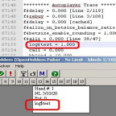

| Symbol | Meaning |
| log$YourTextGoesHere | When executed, adds your specified text to the autoplayer-trace and to the white box in the GUI. The symbol will be evaluated to 1. |
For example if you have the following f$rais-formula,
and you flop a backdoor flush draw, then OpenHoldem will raise and also add the text "ItLives" to the log file, just before the RAIS line. Everytime a log$ symbol is accessed it will be flagged for logging. You can use this to track which part of your formula is to blame for the action taken by OpenHoldem.

remark. Note: You want to use the log$ symbol at the end of a logic block, to make sure it only gets flagged when all the previous statements are true.
remark. As the log$-symbols modify the autoplayer-trace they require the autoplayer to be engaged.